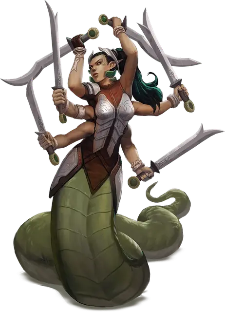

Марилит
Marilith
Большое Исчадие (Демон), хаотично-злое

Класс Доспеха 18 (природный доспех)
Хиты 189 (18к10 + 90)
Скорость 40 футов
| мод | спас | ||
|---|---|---|---|
| СИЛ | 18 | +4 | +9 |
| ЛОВ | 20 | +5 | +5 |
| ТЕЛ | 20 | +5 | +10 |
| мод | спас | ||
|---|---|---|---|
| ИНТ | 18 | +4 | +4 |
| МДР | 16 | +3 | +8 |
| ХАР | 20 | +5 | +10 |
Сопротивление урону огонь, холод, электричество; дробящий, колющий, рубящий от немагических атак
Иммунитет к урону яд
Иммунитет к состояниям отравление
Чувства истинное зрение 120 футов, пассивное Восприятие 13
Языки Бездны, Телепатия 120 фт.
Опасность 16 (15000 опыта)
Бонус мастерства +5
Особенности
Сопротивление магии. Марилит совершает с преимуществом спасброски от заклинаний и прочих магических эффектов.
Магическое оружие. Атаки оружием марилит являются магическими.
Быстрая реакция. Марилит может совершать по одной реакции в каждом ходу сражения.
Вариант: Призыв демона. У некоторых демонов может быть действие, позволяющее им призывать других демонов.
Призыв демона (1/день). Демон выбирает, кого призвать, и пытается это сделать. Марилит получает 50% шанс призыва 1к6 вроков [vrock], 1к4 хезроу [hezrou], 1к3 глабрезу [glabrezu], 1к2 нальфешни [nalfeshnee] или одной марилит [marilith].
Призванный демон появляется в свободном пространстве в пределах 60 футов от призывателя, и действует как его союзник, не имеющий способности призывать демонов. Он призывается на 1 минуту или пока призыватель не умрёт или действием его не отпустит.
Действия
Мультиатака. Марилит совершает семь атак: шесть длинными мечами, и одну хвостом.
Длинный меч. Рукопашная атака оружием: +9 к попаданию, досягаемость 5 футов, одна цель. Попадание: Рубящий урон 13 (2к8 + 4).
Хвост. Рукопашная атака оружием: +9 к попаданию, досягаемость 10 футов, одно существо. Попадание: Дробящий урон 15 (2к10 + 4). Если размер цели не больше Среднего, она становится схваченной (Сл высвобождения 19). Пока цель схвачена, она опутана, марилит может автоматически попадать по цели хвостом, и марилит не может совершать атаки хвостом по другим целям.
Телепортация. Марилит магическим образом телепортируется вместе со всем несомым и носимым снаряжением, на расстояние до 120 футов в свободное пространство, которое она видит.
Реакции
Парирование. Марилит добавляет 5 к КД против одной рукопашной атаки, которая должна попасть по ней. Для этого марилит должна видеть атакующего, и должна использовать рукопашное оружие.
Описание
«ХРАМ БЫЛ УСЫПАН КУСКАМИ ТЕЛ. МЫ РЕШИЛИ, ЧТО КУЛЬТИСТЫ ПРИЗВАЛИ МОЩНОГО ДЕМОНА И УМЕРЛИ, НЕ УСПЕВ ДАЖЕ ПОЖАЛЕТЬ ОБ ЭТОМ. НЕ ЖЕЛАЯ ОКАЗАТЬСЯ РАЗОРВАННЫМИ ТАК ЖЕ, МЫ, ПОДЖАВ ХВОСТ, ВЕРНУЛИСЬ В ДЕРЕВНЮ ХОММЛЕТ. УВЕРЕН, РУФУС И БЬЁРН ВДОВОЛЬ БЫ НАД НАМИ ПОСМЕЯЛИСЬ»
— НЕЛЮМ, МОЛОДОЙ ВОЛШЕБНИК ПОЛУЭЛЬФ, ОПИСЫВАЯ СВОЙ ПЕРВЫЙ И ПОСЛЕДНИЙ ПОХОД В ХРАМ СТИХИЙНОГО ЗЛА
Марилит выглядит пугающе — шестирукая женщина, нижняя часть тела которой заменена на хвост гигантской змеи.
Используя мечи в каждой из своих шести рук, марилит является опаснейшим врагом, с которым немногие могут сравниться. Эти демоны обладают острым умом и великолепным тактическим чутьём, и благодаря этому могут объединить других демонов. Марилит часто встречают в качестве офицеров во главе демонической орды, где они используют любую возможность ринуться в бой.
См. дополнительно статью: "Бестиарий: Демоны"